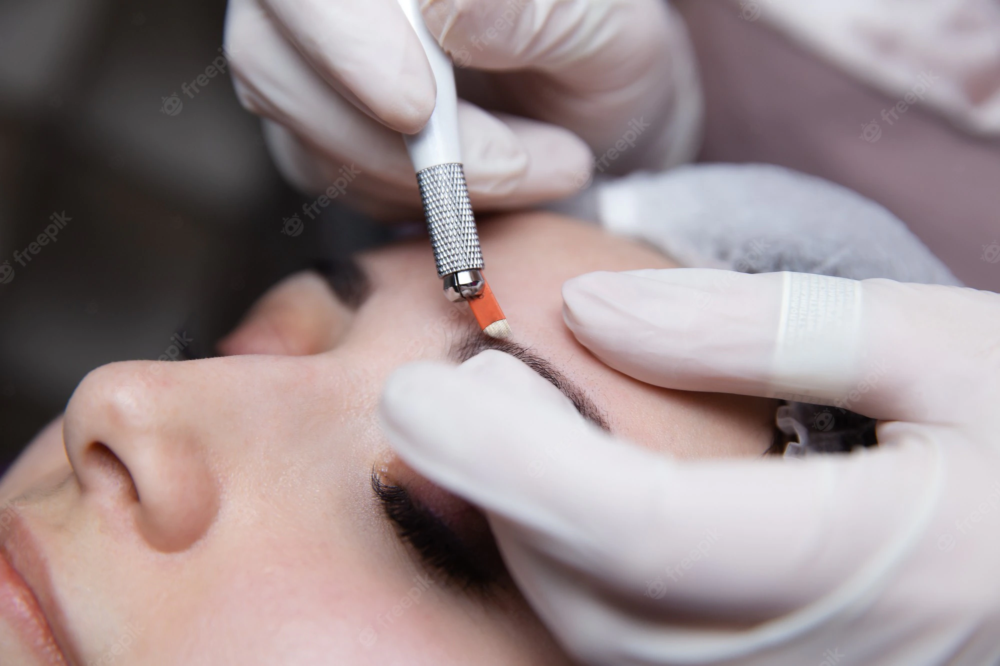
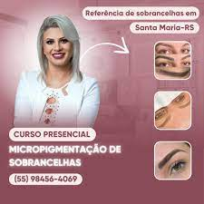

Serviços
Design de Sobrancelhas
É uma técnica utilizada para desenhar as sobrancelhas e tem como objetivo valorizar o rosto e expressão da cliente.
Micropigmentação
Algumas técnicas usadas atualmente são: microblading, shadow, e a mais atual, a nanoblading.
Remoção a laser
Você não precisa ter na pele algo que não quer mais, remova com o metodo mais seguro e eficaz.
Laser ND-YAG
UltraFocus
Equipamento com eficácia comprovada para tratamentos de:Envelhecimento e Flacidez facial, estimula o colágeno trás vistosidade para pele e causa um efeito lifting
sobre
-

2015
Início de carreira
Após muitos estudos e especializações iniciou os atendimentos em uma pequena sala comercial, somente com os equipamentos necessários, algo que foi fundamental para sua evolução profissional.
-
2016
Grande evolução
Após muita dedicação, conseguiu se tornar referência em Santa Maria, além de um espaço bem localizado na cidade.
Investiu também em materiais de qualidade e cursos especializantes, para proporcionar melhor experiencia ao seu cliente, hoje é especialista em micropigmentação hiperrealista e remoção de tatuagens e sobrancelhas -

Dezembro de 2021
Lançamento do seu proprio curso
Após muitos anos de experiência começou a ministrar cursos de micropigmentação.
-
Faça parte
De nossa
Historia